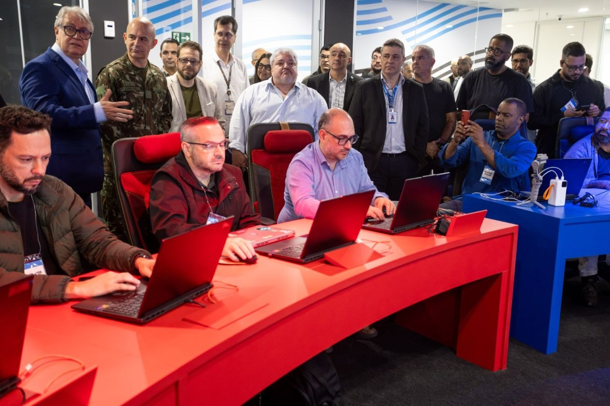
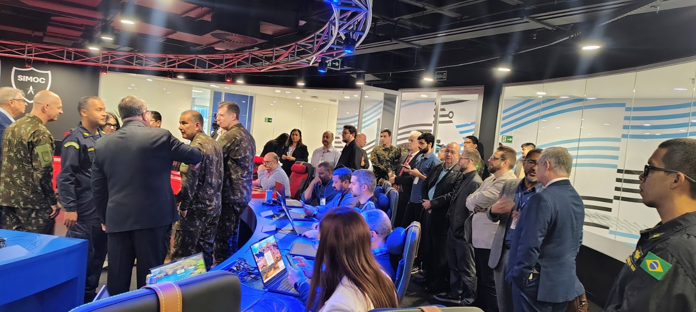
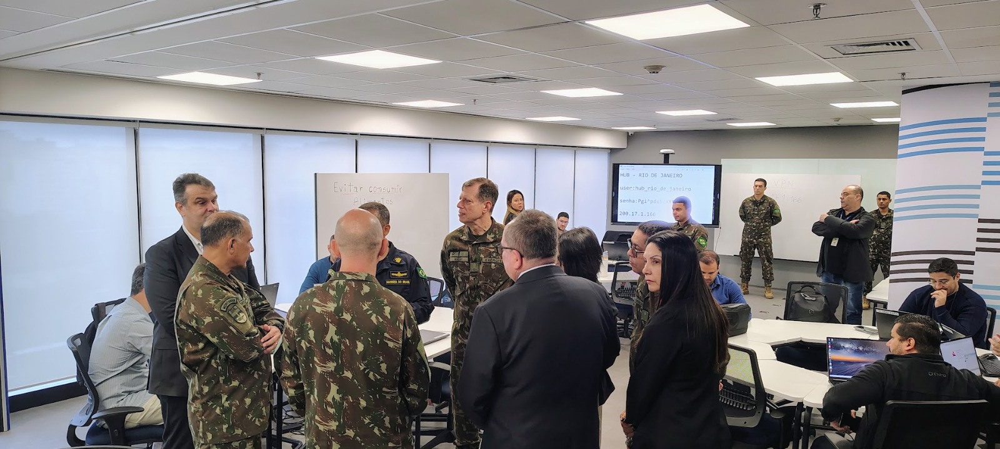
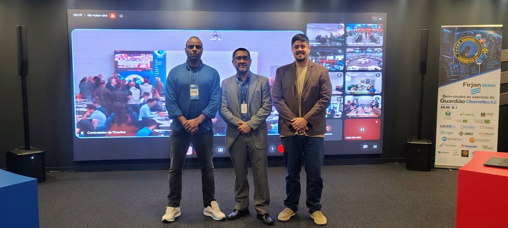
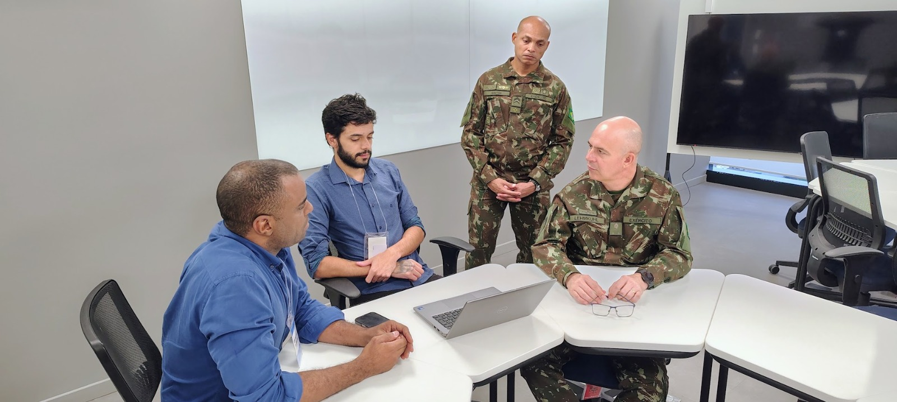
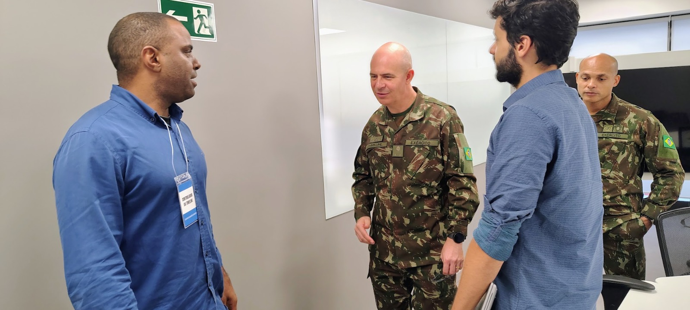
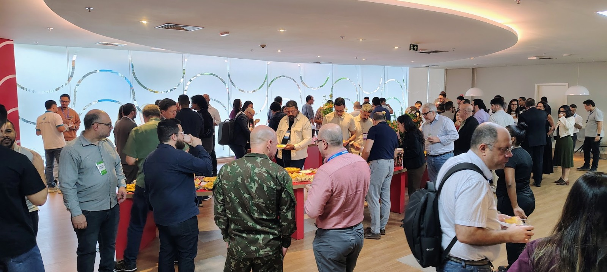
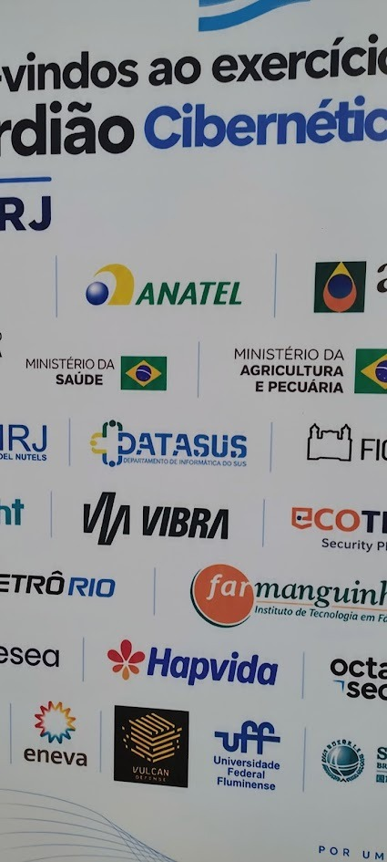
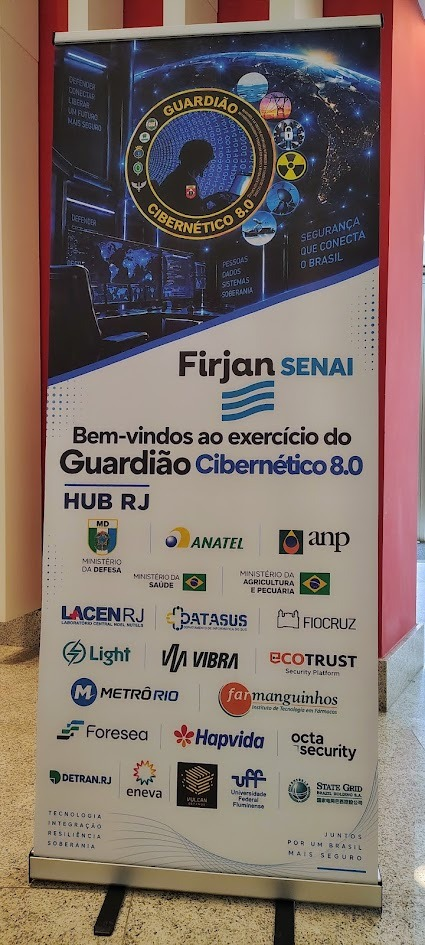
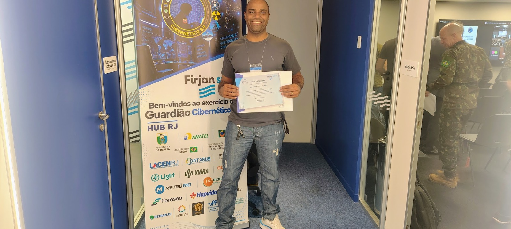

Fundador · AppSec & DevSecOps
Rafael Ribeiro
Mais de 10 anos entre Red Team, Blue Team e gestão de vulnerabilidades — governo federal, educação, varejo e serviços financeiros digitais.
Pentest · AppSecDevSecOpsCloud
Integramos endpoint (EDR/XDR), identidade e rede em um único fluxo de detecção e resposta. O resultado é menos ruído para o analista, contexto para o negócio e evidência pronta para auditoria — da escolha da ferramenta à operação junto ao seu time.
Um modelo direto: diagnóstico, arquitetura de coleta, afinação de correlação e handover — sem promessas genéricas. Detalhes técnicos e exemplos na página dedicada.
Eventos de endpoint, identidade, rede e cloud com requisitos de telemetria alinhados ao seu apetite a risco.
Correlação, IOC e comportamento para o analista focar no que importa — com cobertura mapeada ao MITRE ATT&CK.
Playbooks, integrações e apoio à contenção com métricas que a gestão entende e evidência para auditoria.
A Plataforma Vulcan e outros serviços complementam o programa quando fizer sentido — o núcleo desta home é SIEM + endpoint.
Escopo fechado, entregáveis claros e transferência de conhecimento para o seu time — sem dependência permanente de consultoria.
Mapeamos ativos, fontes de log, casos de uso e lacunas de detecção. Você recebe prioridades e esforço estimado antes de contratar.
Arquitetura de coleta, integração EDR + SIEM, regras de correlação, playbooks e validação com cenários reais do seu ambiente.
Handover documentado, treinamento do time e acompanhamento contínuo — ou operação gerenciada pela Vulcan, com SLA combinado.
Prazos típicos para ambientes de médio porte; o diagnóstico ajusta o cronograma ao escopo e à maturidade do ambiente.
Frentes objetivas para ampliar prevenção, detecção e capacidade de resposta.
Estruturação, evolução e apoio operacional para monitorar e responder com contexto.
Conhecer escopo ValidaçãoTestes orientados a risco e integração de segurança ao ciclo de desenvolvimento.
Conhecer escopo GovernançaEvidências, controles e planos de adequação para ambientes regulados.
Conhecer escopo CapacitaçãoPrograma prático para distribuir conhecimento e responsabilidade de segurança nos times.
Conhecer escopoPrecisa demonstrar ISO 27001, LGPD, PCI ou alinhar ao DPO? Trabalhamos os entregáveis no escopo combinado — fale do seu prazo e do ambiente.
Redes corporativas e plantas industriais (ICS/SCADA) convergem — mas protocolos, criticidade e janelas de manutenção são diferentes. O projeto Vulcan-SIEM estende monitoramento, correlação e resposta para OT sem tratar a operação como extensão genérica de TI.
Em segurança da informação o comprador escolhe quem já operou SOC, resposta a incidentes e ambientes regulados — antes de escolher plataforma. Nossa liderança reúne décadas em setores público, financeiro e infraestrutura crítica.
Fundador · AppSec & DevSecOps
Mais de 10 anos entre Red Team, Blue Team e gestão de vulnerabilidades — governo federal, educação, varejo e serviços financeiros digitais.
Fundador · SOC · LGPD · GRC
Referência no mercado brasileiro — coordenou centros de defesa cibernética, atuou como DPO em multinacional de TI e entregou conformidade em saúde, educação e instituições financeiras.
Fundador · Infraestrutura · Observabilidade
15 anos garantindo disponibilidade em ambientes financeiros e de alta complexidade — middleware, observabilidade e automação que sustentam a telemetria do SOC.
Participação no maior treinamento de defesa cibernética do Hemisfério Sul, com registros do Hub Rio.

A Vulcan participou do exercício estratégico que simulou ataques contra energia, água, telecomunicações e finanças. No Hub Rio, instituições públicas, privadas e militares trabalharam de forma integrada em cenários de resposta a incidentes.
Realizado de 21 a 25 de setembro, o EGC 8.0 reuniu mais de 1.300 participantes, cerca de 300 organizações e representantes de 14 países.
Ler cobertura no Defesa em FocoDeslize para ver todas as fotos · clique para ampliar

Operação integrada
Hub Rio
Vulcan Defense
Cooperação técnica
Integração
Ecossistema
Organizações
EGC 8.0
ParticipaçãoCoberturas oficiais e setoriais para conhecer os cenários, as instituições participantes e o alcance nacional do exercício.
Artigo de Rodrigo Carran Oliveira dos Santos, publicado após sua participação e da equipe da Vulcan Defense — empresa homologada pelo Comando de Defesa Cibernética das Forças Armadas — no 8º Exercício Guardião Cibernético, realizado no Rio de Janeiro e coordenado por Brasília.
Ler artigo Ministério da DefesaVisão geral do exercício, dos setores estratégicos envolvidos e da integração entre governo, empresas e academia.
Ler notícia Defesa em FocoCobertura dos cenários de crise e da proteção de serviços essenciais durante o treinamento.
Ler notícia CNENA participação do setor nuclear em cenários de ataques complexos contra infraestruturas críticas.
Ler notícia Agência Nacional de ÁguasA atuação da ANA no treinamento voltado à segurança do espaço cibernético e dos serviços críticos.
Ler notícia CensipamDestaque para a presença de órgãos públicos, Forças Armadas, iniciativa privada e instituições de ensino.
Ler notícia Marinha do BrasilSimulação testa a resposta a um incidente cibernético envolvendo transporte naval de material nuclear.
Ler notícia Sala de imprensaReunimos as coberturas oficiais, artigos e registros do time em um só lugar — com links para as fontes originais.
Abrir sala de imprensaRespostas diretas sobre ferramentas, escopo e operação. Se a sua dúvida não estiver aqui, fale com a gente.
Não necessariamente. Trabalhamos com a stack atual quando ela atende aos casos de uso. Se houver lacuna, ela é demonstrada com evidências técnicas antes de qualquer recomendação de troca.
Os dois modelos: implantação com handover documentado para o seu time, ou operação contínua (SOC gerenciado) com SLA e escopo combinados. Você escolhe onde a Vulcan entra.
Depende das fontes de log disponíveis. Projetos típicos já geram detecção útil durante a implantação, com ganho progressivo conforme novas fontes e regras entram em produção.
Integramos ao fluxo existente: tickets, runbooks, escalonamento e métricas. A Vulcan atua como extensão do time, não como uma operação isolada.
Entregamos trilha de evidência, registro de tratamento e relatórios de auditoria dentro do escopo. A avaliação de conformidade é sempre conduzida com o seu DPO e a auditoria responsável.
Sim, com escopo próprio no Vulcan-SIEM OT: inventário ICS, zonas Purdue, correlação TI ↔ OT e playbooks que respeitam a continuidade operacional.
Por escopo: ativos, fontes de log, horas de operação e entregáveis. O diagnóstico inicial define a faixa de investimento antes de qualquer contrato.
Ao enviar dados, você concorda com o tratamento conforme nossa Política de Privacidade.